¿Para qué visualizar? Abstracción de Tareas
Antes definimos el qué, es decir, los datos que utilizaríamos en nuestros proyectos. Ahora definiremos el para qué, es decir, especificaremos la(s) tarea(s) a resolver en nuestro proyecto.
La definición de tarea que trabajaremos es general, ya que visualización es un área que cruza otras disciplinas — ¡todes visualizan datos! Pero cada disciplina tiene su propio lenguaje de dominio, y como tal, es posible que se refieran a problemas que se escuchen distinto pero que semánticamente sean el mismo. Por ejemplo, los siguientes problemas se leen completamente diferentes:
- Determinar el churn en la compañía.
- Medir la tasa de cambio de uso de modo de transporte en la ciudad.
- Caracterizar la deserción escolar.
- Cuantificar la proporción de pacientes que no responde (o ha abandonado) a un tratamiento.
Sin embargo, todos llevan a cabo las mismas operaciones con los datos (¿cuáles son?), y posiblemente las mismas codificaciones visuales en caso de usar visualización.
Una tarea se define así:
una acción (verbo)
+un objetivo (característica de los datos)
De acuerdo a esta definición hay tareas que no necesitan visualización. Es una definición general que se puede aplicar a otras áreas. Tampoco se especifica la salida (output) de la tarea, por tanto, también pueden ser datos de entrada para otra, permitiendo la encadenación de tareas.
La taxonomía propuesta por Tamara Munzner es la siguiente:
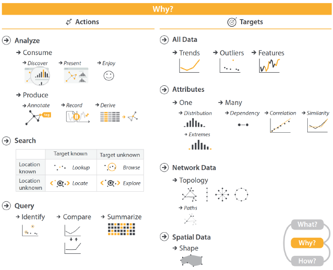
Taxonomía de tareas: acción + objetivo. Fuente: Visualization Analysis & Design.
Las acciones se dividen en tres grandes grupos:
- Analizar — acciones relacionadas con el conocimiento y los datos.
- Consumir Información:
- Descubrir. Esto es lo que usualmente asociamos a una visualización, usarla para descubrir la respuesta a una pregunta.
- Presentar. Queremos entregar un mensaje específico a la audiencia.
- Disfrutar. A veces queremos explorar los datos solo por el placer de hacerlo. Eso también es una tarea,
- Producir Información:
- Anotar. Agregamos información a los datos que aporta contexto, explicaciones, etiquetas (por ej., asignar categorías a elementos para entrenar un modelo de Machine Learning), entre otras actividades.
- Grabar. Cuando interactuamos con una visualización en un dispositivo realizamos un recorrido que es susceptible de ser repetido, tanto con los mismos datos como con otros.
- Derivar. Transformar estos datos en otros, posiblemente con otra estructura.
- Consumir Información:
- Buscar — ante una necesidad de información, buscamos una respuesta o solución. Es posible que hayan muchas posibles respuestas, o bien ninguna. También es posible que se busque una pregunta.
- Consultar — aquí necesitamos una respuesta específica para una pregunta o necesidad. La respuesta es posiblemente única.
- Identificar. Necesitamos la observación, grupo de observaciones, columnas, datasets, etc., que cumplan con un criterio específico.
- Comparar. Dada una observacioń, grupo de observaciones, columnas, datasets, etc., queremos saber cuan similares o diferentes son, o bien, en qué se parecen o difieren.
- Resumir. Dada una observación, grupo de observaciones, columnas, datasets, etc., necesitamos conocer una agregación de éstos que los describa.
Adquirir y utilizar este vocabulario para referirnos a las tareas que debemos efectuar, o problemas que debemos resolver, permite que nos comuniquemos con personas de otras disciplinas u otros marcos culturales (recuerden la figura del esquema notacional entre quien diseña y quien utiliza la visualización). También facilita la colaboración entre data scientists.
Estas acciones se llevan a cabo sobre objetivos. La categorización de objetivos es la siguiente:
- El dataset completo — tendencias (cambios o patrones consistentes en una misma dirección), outliers (observaciones que se salen del comportamiento habitual en el dataset, distorsionando los resultados del análisis), características (patrones que comparten grupos dentro del dataset, por ej., clusters).
- Atributos del dataset — uno (en particular su distribución, sus valores extremos) o varios (en particular relaciones de dependencia, de correlación, o de similitud).
- Datos de red — se analiza la topología (estructura de la red, o el proceso que la llevó a tener su forma actual), o caminos dentro de ella (las aristas que se deben recorrer para llegar desde un nodo hasta otro).
- Datos espaciales/geográficos — se despliega la forma que tienen los elementos (o un conjunto de elementos) con características espaciales o geográficas.
Los objetivos para datos de red y datos espaciales son específicos para esos tipos de dataset, sin perjuicio de que los otros tipos de objetivo se puedan aplican a cualquier tipo de dataset, incluyendo redes y datos espaciales.
Veamos algunos ejemplos para estas tareas.
Acción — Analizar: OECD Better Life Index
El proyecto OECD Better Life Index busca que una persona responda la pregunta ¿Cómo es la calidad de vida en un país? utilizando una visualización interactiva. Por supuesto, la definición de calidad de vida no es simple. Para ayudarnos, la visualización nos permite definir el cálculo de este índice a partir de nuestra propia ponderación de distintos factores (como acceso a salud, balance vida-trabajo, etc.).
En la visualización principal cada país es representado por un elemento gráfico similar a una flor. Cada pétalo representa a una de las dimensiones que influyen en el índice de calidad de vida, y el tamaño de cada pétalo es proporcional a la ponderación que le hemos dado al factor correspondiente. La altura del tallo de la flor es proporcional al valor del índice calculado, y las flores están ordenadas de acuerdo al valor del índice final (alternativamente, se pueden ordenar alfabéticamente).
El sitio se ve así en un computador:
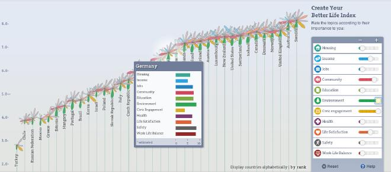
Screenshot del proyecto.
¿Cuáles tareas ejecuta esta visualización? ¡Son varias! Aquí hay algunas:
- resumir
+características (entre países utilizando el índice definido manualmente por quien usa el sitio) - descubrir
+tendencias (entre países) - comparar
+todo el dataset (todos los países)
¿Se les ocurre otra?
Acción — Anotar: sense.us
El sistema sense.us ya no existe, pero en su tiempo fue un sitio de visualización colaborativa. Varias personas podían explorar las visualizaciones disponibles y dejar comentarios en una conversación, o dejar notas con flechas directamente sobre la visualización. Esto es útil pues permite añadir explicaciones sobre fenómenos observados en los datos que no pueden ser explicados por los datos mismos. Esas explicaciones pueden provenir del conocimiento del contexto o de la experiencia de cada persona, y enriquecen la visualización.
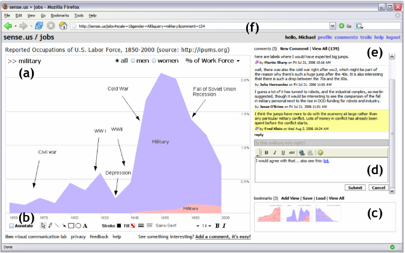
Análisis colaborativo en sense.us. Fuente: Heer, Viégas & Wattenberg, Voyagers and voyeurs: supporting asynchronous collaborative information visualization.
En el ejemplo de la imagen, la funcionalidad que hemos comentado se clasifica como anotar + tendencias, al enfocarse en los períodos de subidas y bajadas de una serie temporal (un dataset de tipo tabla donde cada fila corresponde a una fecha o tiempo).
Acción — Presentar: La Ciudad como Texto
El proyecto La Ciudad como Texto busca visualizar los escritos (en numerosas formas: lienzos, graffitis, rayados, etc.) del principal eje de tránsito de Santiago, el eje Alameda-Providencia, durante el estallido social del 18 de Octubre. La visualización se enfoca en mostrar una imagen que compone más de 2 kilóḿetros de calle, vista completamente en la parte inferior de la pantalla, y una vista detallada de un lugar específico de la calle, que tiene gran parte de la pantalla. En la imagen principal aparecen anotaciones que muestran testimonios, poemas y relatos relacionados con el lugar donde se produjo la anotación.
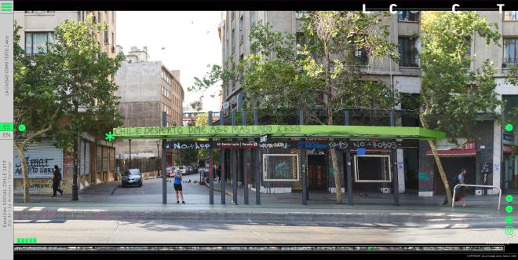
Distintos textos sobre un paradero del Transantiago, tanto oficiales como de protesta El asterisco verde lleva a un relato sobre la frase ‘Chile despertó dime algo más lindo k eso.’
Esta visualización utiliza una técnica típica de la visualización de series temporales llamada overview + detail (imaginen la línea temporal de un año, vista en general en la parte inferior, más la línea temporal de una semana específica, en la parte principal), pero aplicada a una imagen que representa el contenido de una calle, considerando tanto sus elementos urbanos como el texto en ella.
El proyecto busca ser testimonial, por tanto, la tarea que efectúa es presentar + el dataset y su forma geográfica. El aspecto de presentación deja a las personas que visitan el sitio con la opción de extraer algo (que no es necesariamente un insight, también puede ser una emoción), o bien no extraer nada más que la experiencia de haber hecho el recorrido.
Acción — Búsqueda / Search: Google Maps
El ejemplo por excelencia de las acciones de búsqueda es Google Maps. Una consulta típica en esta aplicación (o similares) es la de pedir el camino para llegar de un lugar a otro. El resultado se ve así:
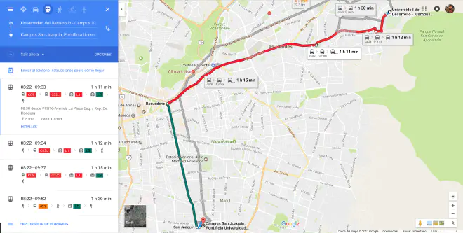
Respuesta de Google Maps a: ¿Cómo llegar desde la UDD hasta la PUC?
En la visualización se muestran datos geográficos directamente (calles y elementos geográficos en sus posiciones y formas, con nombres). También se muestra el camino a seguir en la red de transporte, con distintos colores para representar etapas de viaje. Eso es una tarea de mirar (lookup) + un camino en la red de transporte. Es una tarea que se puede resolver dándono las indicaciones en texto, sin embargo, al usar visualización podemos comprender muchos aspectos del viaje directamente, incluyendo su largo y su complejidad. Podemos orientarnos inmediatamente. Además, esto muestra que pueden existir muchas respuestas para la misma pregunta. En el ejemplo se ve el camino más corto utilizando transporte público, pero existen más alternativas, tanto usando transporte público como no. Al mismo tiempo, ¡es posible que no exista un camino entre dos lugares!
Las acciones de búsqueda son múltiples. Además de mirar, también están ubicar (conocer la ubicación de algo), navegar (moverse en un lugar en una dirección específica), explorar (usar la búsqueda misma como manera de determinar qué hacer). El tipo de acción de búsqueda se determina en función de conocer la ubicación que necesitamos y de conocer el objetivo de nuestra necesidad de información. Las siguientes tablas
| Ubicación 🠖 | Conocida | Desconocida |
|---|---|---|
| Objetivo 🠗 | ||
| Conocido | Lookup (mirar): Sabemos dónde vamos y qué haremos, pero queremos saber qué hay alrededor (o en el camino). | Locate (ubicar): Sabemos lo que necesitamos pero no dónde está. ¿Dónde queda el campus RESB de la Universidad? |
| Desconocido | Browse (navegar): Sabemos el barrio al que iremos, pero no el lugar. específico. ¿A cuál restaurant ir en el Barrio Yungay? | Explore (explorar): sabemos que haremos algo, pero no sabemos qué ni dónde. ¿Usemos el mapa para encontrar un panorama? |
Desconocido
Browse (navegar): Sabemos el barrio al que iremos, pero no el lugar. específico. ¿A cuál restaurant ir en el Barrio Yungay?
Explore (explorar): sabemos que haremos algo, pero no sabemos qué ni dónde. ¿Usemos el mapa para encontrar un panorama?
Estas acciones también se pueden llevar a cabo en un espacio de informacioń que no sea geográfico. La visualización nos permite movernos a través de los datos, conocer los caminos en el dataset, ubicar lo necesario para responder nuestras preguntas, o explorar para (como diría Ben Shneiderman) descubrir aquellas preguntas que queríamos hacer pero no sabíamos que teníamos.
Acción — Consultar: Map of the Market
La principal diferencia entre buscar y consultar es que en esta última categoría de acciones existe una respuesta correcta, y solo podemos dar la tarea por resuelta una vez encontrada esa respuesta.
Un buen ejemplo de una visualización que permite hacer tareas de consulta es Map of the Market. Esta visualización fue diseñada en 1998 por Martin Wattenberg. Aunque ya no está disponible, existe una versión moderna en el sitio FinViz, que cumple con el mismo objetivo. En ella, cada empresa es representada por un rectángulo cuya área es proporcional al valor de la empresa, y el color del rectángulo indica si la empresa ha tenido pérdidas (rojo) o ganancias (verde) en el último tiempo. Las empresas están agrupadas por sector. La técnica de visualización utilizada se llama treemap y se ve a continuación:
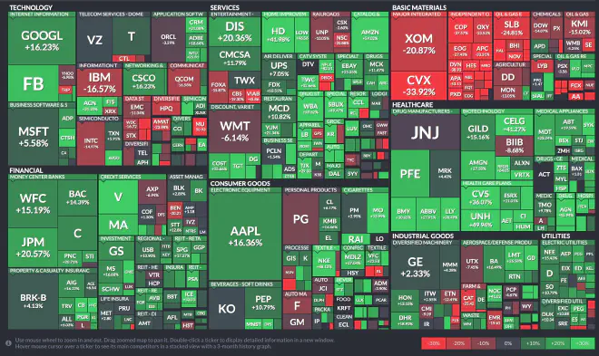
Visualización del mercado de acciones en Estados Unidos, basada en Map of the Market.
Esta interfaz permite realizar operaciones de consulta sin tener que definir lo que queremos saber en un formulario, ni de presionar un botón. ¿Cuál es el sector productivo más grande (identificar + el dataset)?¿Cuál es la empresa más grande del área de tecnología (identificar + el dataset)?¿El área financiera goza de buena salud, teniendo a la mayoría de las empresas con ganancias (comparar + uno o más atributos -> resumir + uno o más atributos)?¿Cuál es el peor sector en la economía actual (resumir + uno o más atributos -> comparar + uno o más atributos)? Estas preguntas, y otras, se pueden responder visualmente con este diseño. ¡Las posibilidades al agregar interacción al sistema aumentan!
Este proyecto muestra una manera eficiente y elegante de hacer un mapa que no utiliza información geográfica con riqueza de operaciones posibles.
Objetivo — Todos los Datos: Card Captor Sakura
Pongamos el foco en los objetivos, comenzando con una visualización que muestra todos los atributos de un dataset. Esta visualización permite interactuar con las portadas del manga Card Captor Sakura (estoy seguro que muches conocen esta serie, pues también fue animada y fue transmitida por televisión abierta a fines de los 90 e inicios de los 2000).
En la visualización vemos las portadas de cada tomo organizadas en el perímetro de un gran círculo. Esta organización radial permite que al interior se incorpore otro círculo, cuyo perímetro es dividido por los personajes de la serie. El largo del arco correspondiente a cada personaje es proporcional a su importancia. Entre los dos círculos cada personaje aparece conectado con las portadas de la serie en la que aparece. En el interior del círculo interior es posible ver las conexiones entre personajes, que son muchas — es una serie de romance. Los capítulos del círculo exterior son caracterizados por la proporción de colores presentes en la ilustración de cada portada. La visualización se ve así al hacer clic sobre un capítulo específico:
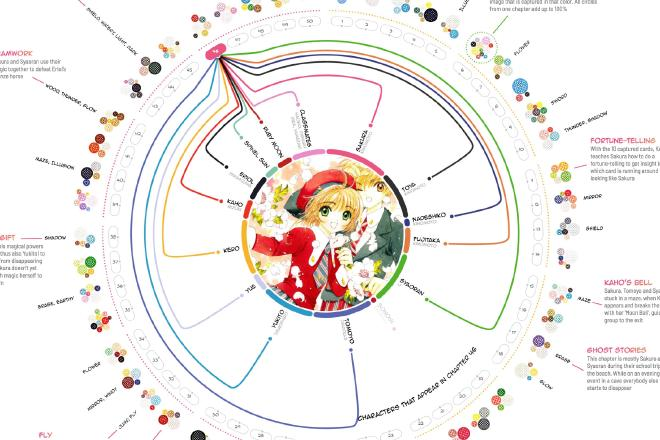
Análisis visual de las portadas del manga Card Captor Sakura.
Esta visualización es un ejemplo de disfrutar + el dataset. Ahora bien, es posible que existan personas que vean otras tareas aquí. Alguien que estudie arte podría estar interesade en la distribución de colores de las portadas (descubrir + distribución). Alguien que escriba fanfics podría estar interesada en las relaciones de los personajes (identificar + topología de la red), entre otras.
Cuando trabajamos con todo el dataset podemos hacer cosas complejas, donde la persona que usa el sistema podría descubrir conocimiento a través de la exploración, que la persona usuaria lo descubra a través de la exploración) o bien algo sencillo que sirva como punto de partida. Las posibilidades son vastas.
Objetivo — Tendencias y Extremos: COVID-19 en el Financial Times
Revisitamos esta visualización que vimos en la introducción del curso, con las trayectorias de los nuevos casos diarios de COVID-19 en muchos países. Esta visualización diseñada por John Burn-Murdoch utiliza un tipo de gráfico que probablemente todes hemos visto: el gráfico de líneas. Cada línea representa la evolución en la detección de nuevos casos de la enfermedad a lo largo del tiempo. Aunque cada línea representa a un país, la mayoría es coloreada gris, solamente unos cuantos países son coloreados y anotados (según las necesidades de la historia que se desea contar). El gráfico se ve así:

Casos diarios confirmados de COVID-19 en varios países del mundo (datos del 11 de mayo de 2020).
A pesar de ser una técnica de visualización común y frecuente de ver, las decisiones de diseño detrás de este gráfico son muchas. ¿Cuáles países destacar?¿Cuáles colores utilizar?¿Qué escala de magnitud utilizamos para el eje y?¿Utilizamos las fechas o un día de referencia para cada país? El resultado es una visualización que permite realizar a lo menos las siguientes tareas: comparar + tendencias (¿cuáles países han tenido un desarrollo más positivo que Italia?), identificar + outliers (observen a Nueva Zelanda y a los Estados Unidos — se comportan muy distinto a los demás países, y lo sabemos enseguida), descubrir + extremos (¿cuándo fue el peak de casos y en cuál país sucedió?¿Cuándo China tuvo la menor cantidad de casos en el rango de días comparable a los otros países?).
Este gráfico ejemplifica como una visualización puede ser efectiva sin necesidad de ser compleja visualmente. El impacto mundial que tuvo en informar al público general y a tomadores de decisiones es una muestra de ello.
Objetivo — Relaciones y Similitudes: GDP y Gini en Países
El siguiente gráfico se titula “Cuando el PIB crece, no siempre la desigualdad cae.” En efecto, esa es la historia que cuenta Alberto Cairo utilizando visualización. Lo logrando graficando la relación entre dos variables cuantitativas de Brasil (índice GINI y PIB) en distintos períodos presidenciales (una variable categórica):
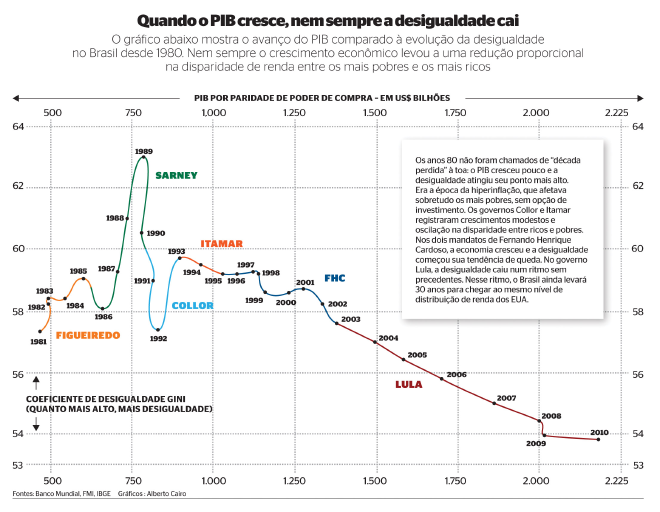
Fuente: The functional art, de Alberto Cairo.
La descripción anterior se refiere a la historia que cuenta el gráfico. En términos formales, la tarea que realiza es presentar + correlación entre varios atributos.
Es una visualización efectiva y ha inspirado a muchas personas a crear otras similares, tanto con el mismo espíritu, pero aplicado a otros países, como a otras temáticas, pero siguiendo la misma codificación visual. Para el primer caso, el Barcelona Supercomputing Center hizo una versión interactiva para varios países del cono-sur de Latinoamérica que luce así:
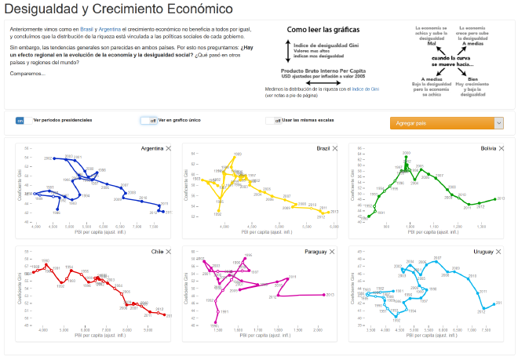
Versión interactiva de Desigualdad y Crecimiento Económico, por el Grupo de Visualización Científica del Barcelona Supercomputing Center.
La interactividad permite profundizar las similitudes y diferencias entre países (comparar + correlación), entre otras tareas. Como permite cambiar la configuración de la codificación visual, también se puede explorar + el dataset de maneras propias para cada persona. ¡La aplicación es flexible! Les desafío a utilizarla para encontrar inspiración para sus proyectos.
Objetivo — Redes: Redes Genéticas
Para poder crear tratamientos contra el cáncer y otras enfermedades es necesario entender como se relacionan los genes que, en el caso del cáncer, terminan causando la multiplicación anómala de células. Algunas respuestas a ello están en los genes.
El investigador Martin Krzywinski es un pionero en el diseño y uso de visualización para estudiar relaciones entre genes, particularmente en el estudio de genes cancerígenos. La imagen a continuación proviene de un artículo científico donde se planea el diseño de hive plot, una manera de visualizar redes, ejemplificado con una red de genes. Los genes están conectados entre sí si es sabido que están asociados a la misma enfermedad. La imagen a continuación fue extraída del paper, e ilustra dos maneras de visualizar la parte relevante de la red para un conjunto de genes específicos:
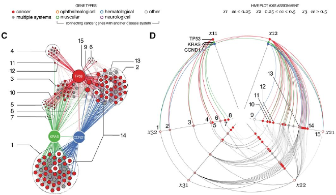
Fuente: Krzywinski et al, Hive plots—rational approach to visualizing networks.
A la izquierda (marcado con C) se muestra la manera típica de visualizar redes, conocida como node-link diagram. A la derecha se muestra la técnica propuesta en el paper. En la primera técnica, es claro cuáles son los nodos (genes) en los cuales hemos enfocado el análisis, puesto que aparecen con mayor tamaño y con colores propios. En esta visualización nos interesa descubrir + la topología de la red de cada gen, así como identificar + similitudes entre genes (¿están los genes A y B conectados con los mismos nodos?). Este gráfico, si bien es directo de interpretar gracias a la ubicuidad de esa codificación visual, oculta la topología y estructura de la red debido a la densidad de los nodos, puesto que cada comunidad está lo suficientemente entrelazada como para perder el detalle de conexiones individuales.
El hive plot resuelve este problema al definir ejes estructurales en la red, y situar los nodos en los distintos ejes de acuerdo a sus atributos. Los enlaces entre nodos son curvas que, a diferencia de la técnica tradicional, son directas de identificar gracias al uso del color. En el ejemplo se observa que los colores tienden a conectarse con distintas partes de los ejes estructurales, mostrando que la topología de cada gen de interés es distinta.
Objetivo — Geografía: The Livehoods Project
¿En qué barrio viven ustedes?
Una característica de los barrios es que están delimitados por bordes administrativos que no representan necesariamente como la gente vive en ellos. Pero, ¿quién define los barrios?¿quién los diseña?¿qué tan válidos son hoy?
El proyecto Livehoods postula que existen “barrios vivos” en una ciudad, y define una manera de calcularlos utilizando Machine Learning. Específicamente, utiliza los check-ins de la red Foursquare (los check-ins son reportes de entrada a un lugar enviados a través del telefóno móvil) para crear una red de venues (lugares susceptibles de hacer check-in dentro de ellos), donde dos venues están conectadas si la misma persona hizo check-in en ellas, y el peso de cada venue está determinado por la cantidad de check-ins totales en el lugar. En esta red se puede ejecutar una técnica de detección de comunidades o clustering, ¡y voilà! Cada cluster es candidato de ser un “barrio vivo” (livehood). Los resultados del proyecto se visualizan utilizando atributos geográficos: cada venue es representada con un punto, cuyo color depende del cluster al que pertenece, y cuya posición representa su ubicación en la ciudad. Se ve así:
 de Nueva York de acuerdo a datos de Foursquare. Al cliquear un barrio, se despliega la envolvente convexa que lo delimita.”)
La visualización resuelve la tarea descubrir + la forma gegráfica de cada livehood, al permitir hacer clic sobre una venue para desplegar los bordes que lo delimitan (su envolvente convexa o convex hull). Así, una persona puede explorar los barrios vivos de la ciudad, mientras que quienes están detrás del proyecto pueden evaluar sus hipótesis respecto a la composición y forma de los barrios.
Objectivo — Tendencias en Geografía: GeoFacetas
Como último ejemplo en esta unidad veremos el uso de informacioń geográfica. La siguiente imagen muestra la evolución del Producto Interno Bruto (GDP) per cápita en los países de Europa, utilizando un gráfico de líneas para cada país:
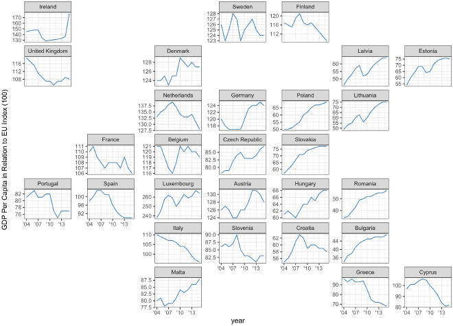
Gráficos de líneas con el GDP (o Producto Interno Bruto) de los países europeos, organizados de acuerdo a su posición geográfica.
Observamos que el gráfico correspondiente a cada país está ubicado en una posición similar a la que le correspondería en el mapa real, guardando las limitantes de utilizar una grilla de cuadros en vez de bordes irregulares. Este gráfico en particular fue generado con geofacet, un módulo de R que permite organizar múltiples gráficos de acuerdo a la región que representan. Con ese esquema, la información geográfica de cada país (su posición) permite realizar la tarea comparar + tendencias entre países e identificar + patrones geográficos. Por ejemplo, ¿cuál sector de Europa continental tiene mejor GDP global, el sector norte o el sur, el este o el oeste? O bien, ¿existe influencia de GDP entre países vecinos?¿O la posición no importa?
Este tipo de gráficos permite reducir la complejidad de la información que se muestra. Ya que hay tendencias absolutamente dispares en el dataset (unos van en subida mientras otros van en picada), un único gráfico de líneas hubiese presentado demasiado ruido y desorden como para ser interpretado, a diferencia del gráfico de COVID-19, donde, a pesar de haber muchos países, las curvas no se diferenciaban tanto. Este gráfico, en cambio, dificulta encontrar outliers y extremos, pero no es ése su propósito. Su propósito es resolver otra tarea, la descrita en el párrafo anterior.
Curso: Estamos en un Punto de Quiebre
Llegados a este punto, sabemos que el proceso de visualización comienza con uno o más datasets, del que conocemo su tipo y las características de sus atributos. En esta unidad hemos definido las tareas que queremos resolver, cada una identificada por una acción más un objetivo.
Así, el paso de datos -> tarea(s) nos recuerda el esquema de la unidad introductoria, respecto a cuándo es necesario o posible. Esa decisión depende del contexto de cada proyecto y no ahondaremos más en ese asunto en el curso. Por ende, el siguiente paso será la transición tarea(s) -> codificación visual, donde diseñamos una visualización para resolver las tareas.
Aquí hemos utilizado la notación acción + objetivo, sin embargo, el + es innecesario en futuros usos de los términos aprendidos. Lo hemos empleado para enfatizar la definición de tarea.
Además de servir como base para el diseño de visualizaciones, el tener incorporados estos términos de acción y objetivo en nuestro vocabulario nos ayudará a comunicarnos con otras personas, para unificar criterios a la hora de trabajar en un proyecto basado en datos, como a la hora de comunicarnos con les potenciales usuaries del sistema que vayamos a desarrollar. Escuchar sus requerimientos y necesidades y traducirlos a esta terminología permitirá acotar, definir y converger visiones respecto a los alcances y funcionalidades del proyecto, y sobretodo, saber que estamos resolviendo la tarea adecuada.
Lecturas Recomendadas
- Wattenberg, Martin, and Jesse Kriss. Designing for social data analysis. IEEE transactions on visualization and computer graphics 12, no. 4 (2006).